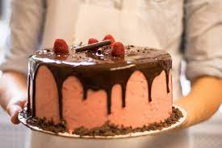
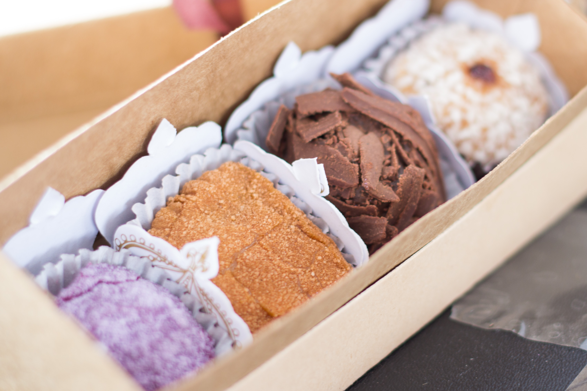

Bolo é um alimento à base de massa de farinha, geralmente doce e cozido no forno. Os bolos são um dos componentes principais das festas, como as de aniversário e casamento, por vezes ornamentados artisticamente e ocupando o lugar central da mesa.
Bombom é um doce constituído basicamente por um recheio e recoberto por uma camada de chocolate ou glacê. Além desses ingredientes básicos, pode conter outros, desde que não descaracterizem o produto.
